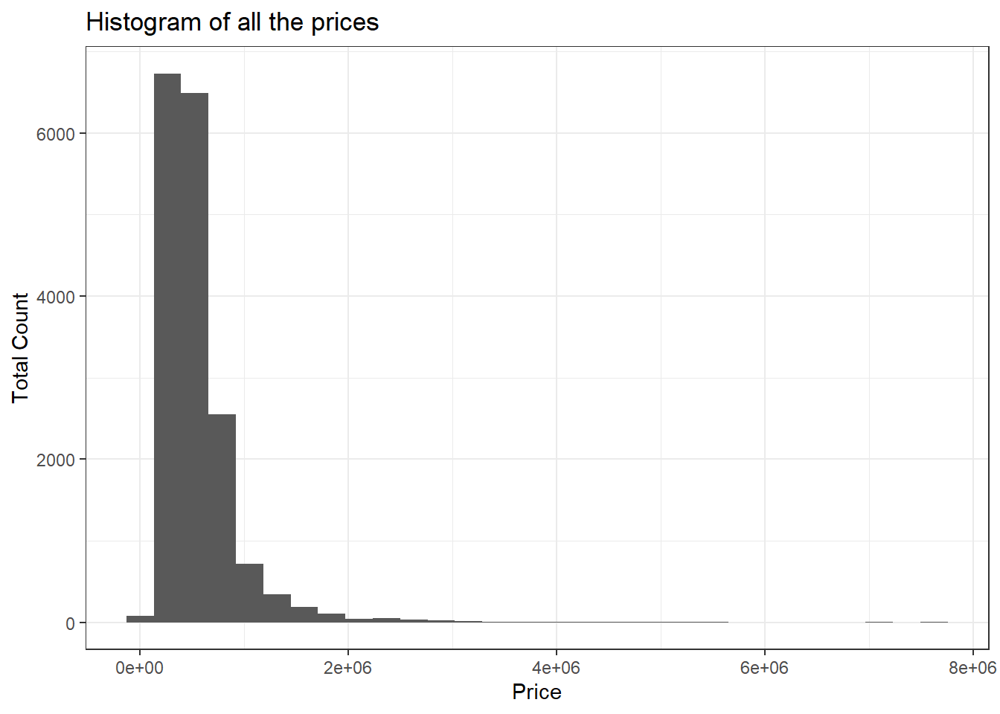
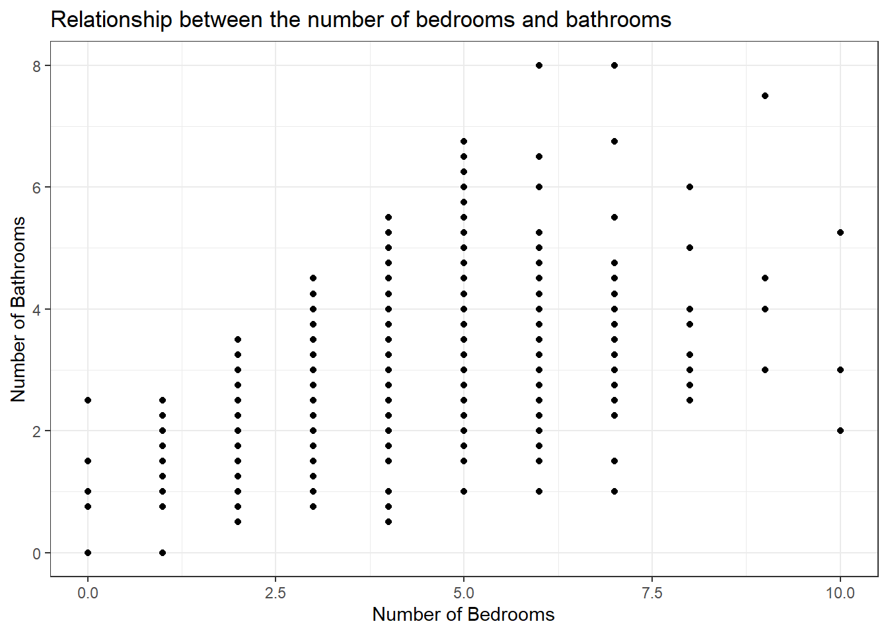
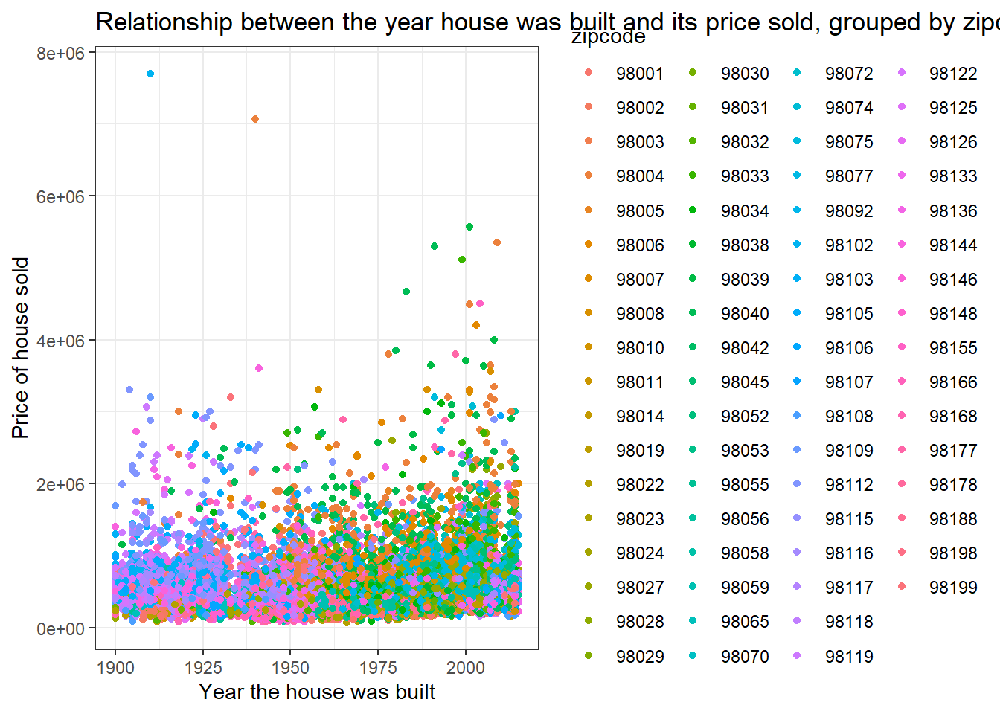
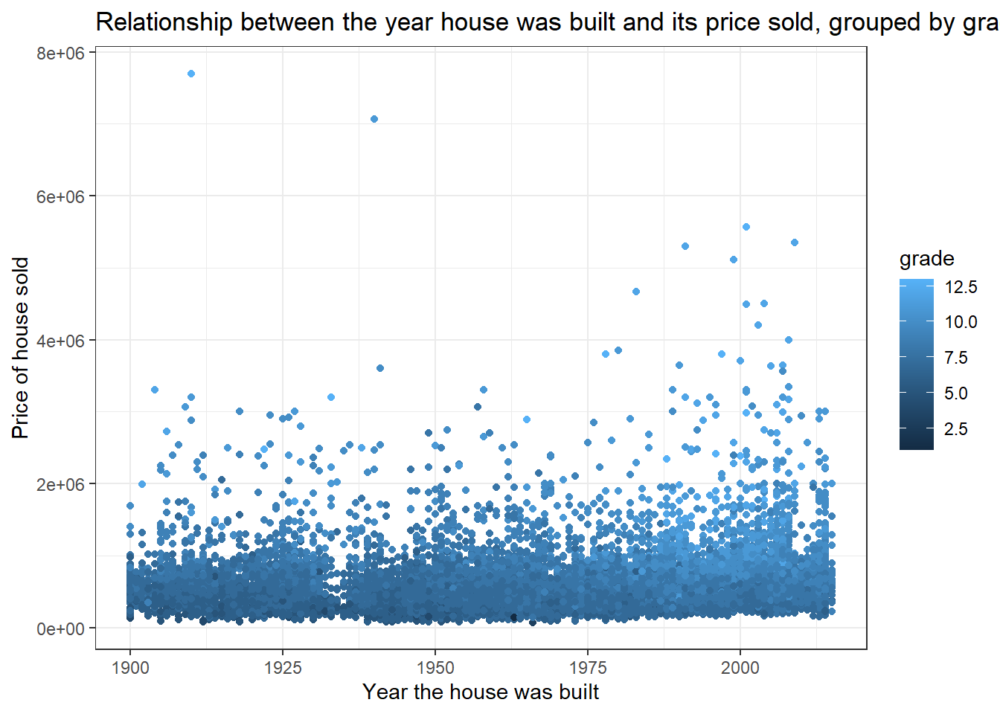
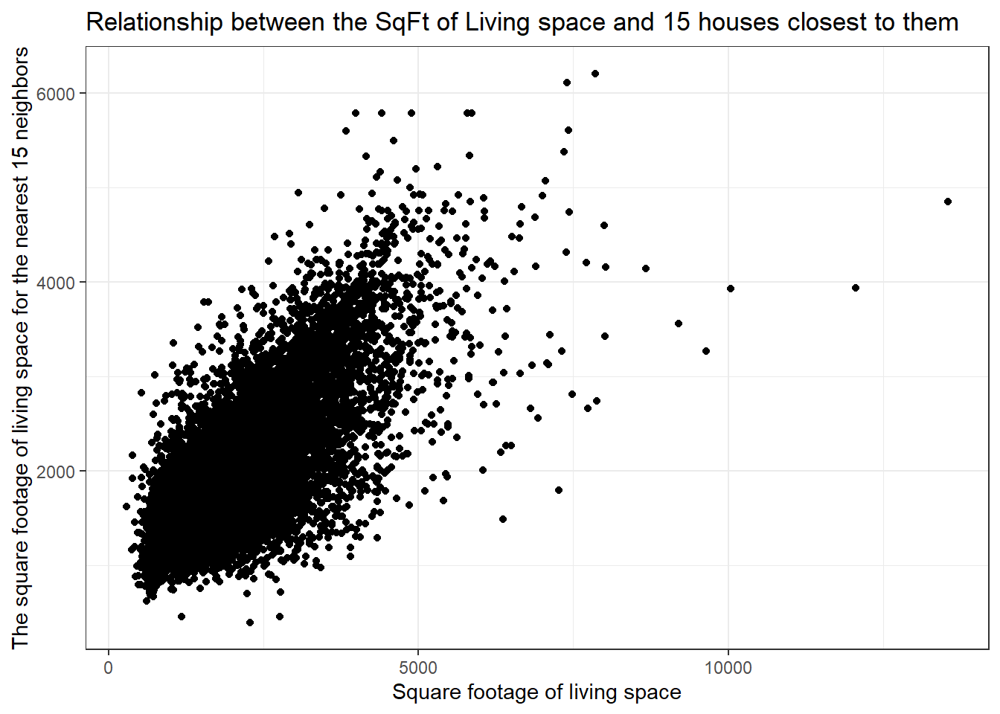
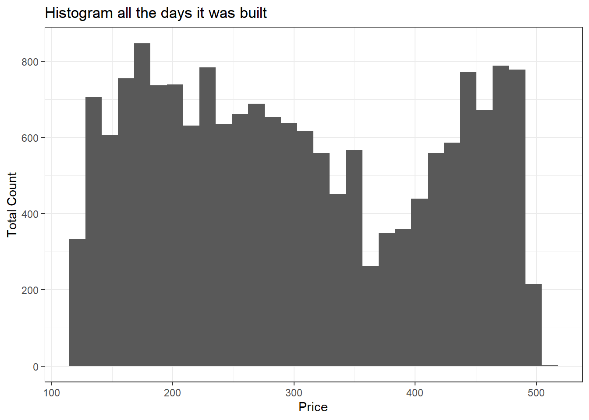

start_date <- as.Date("2014-01-01")
updatedhousedata <- housedata %>%
mutate(
yr_built = as.numeric(format(yr_built, "%Y")),
yr_renovated = as.numeric(format(yr_renovated, "%Y")),
days_since_2014 = as.numeric(difftime(date, start_date, units = "days"))
) %>%
mutate(quality = case_when(
grade >= 1 & grade <= 3 ~ "1",
grade >= 4 & grade <= 11 ~ "2",
grade >= 12 & grade <= 13 ~ "3"
))Project for 2860
Variables and explanations
id - Unique ID for each home sold
date - Date of the home sale
price - Price of each home sold
bedrooms - Number of bedrooms
bathrooms - Number of bathrooms, where .5 accounts for a room with a toilet but no shower
sqft_living - Square footage of the apartments interior living space
sqft_lot - Square footage of the land space
floors - Number of floors
Variables and explanations continued
waterfront - A dummy variable for whether the apartment was overlooking the waterfront or not * 1’s represent a waterfront property, O’s represent a non-waterfront property
view - An index from 0 to 4 of how good the view of the property was, 0 - lowest, 4 - highest
condition - An index from 1 to 5 on the condition of the apartment, 1 - lowest, 4 - highest
grade - An index from 1 to 13, where 1-3 falls short of building construction and design, 7 has an average level of construction and design, and 11-13 have a high quality level of construction and design.
sqft_above - The square footage of the interior housing space that is above ground level
Variables and explanations continued again
sqft_basement - The square footage of the interior housing space that is below ground level
yr_built - The year the house was initially built
yr_renovated - The year of the house’s last renovation
zipcode - What zipcode area the house is in
lat - Lattitude and long - Longitude
sqft_living15 - The square footage of interior housing living space for the nearest 15 neighbors
sqft_lot15 - The square footage of the land lots of the nearest 15 neighbors
Creation of new variables and altering others
Histogram of all the prices

Bed and Bath relation

Price and yr_built relation grouped by zipcode

Price and yr_built relation grouped by quality

sqft_living15 and sqft_living relation

Histogram of how many days since 2014

What house is about $8,000,000
eightmil <- updatedhousedata %>%
filter(price > 7500000) %>%
select(price,bedrooms,bathrooms,condition,quality, sqft_living )
glimpse(eightmil)Rows: 1
Columns: 6
$ price <dbl> 7700000
$ bedrooms <int> 6
$ bathrooms <dbl> 8
$ condition <int> 4
$ quality <fct> 3
$ sqft_living <int> 12050Image of the house, 1137 Harvard Ave E
High grade and quality
Not waterfront, but has a pool.
6 bed and 8 bath